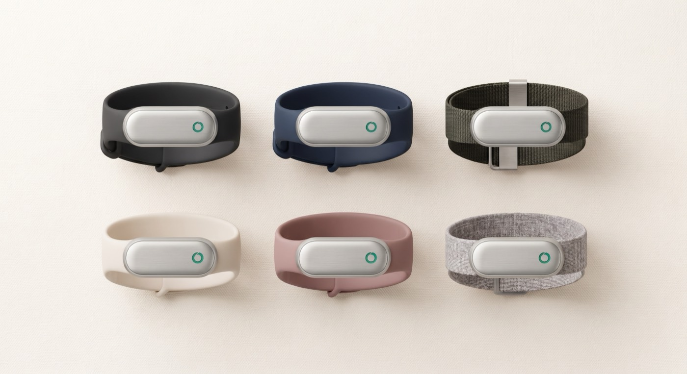
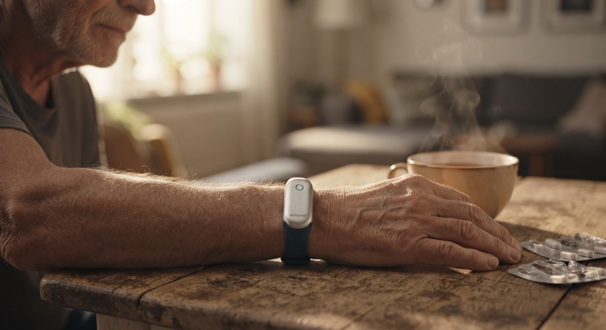
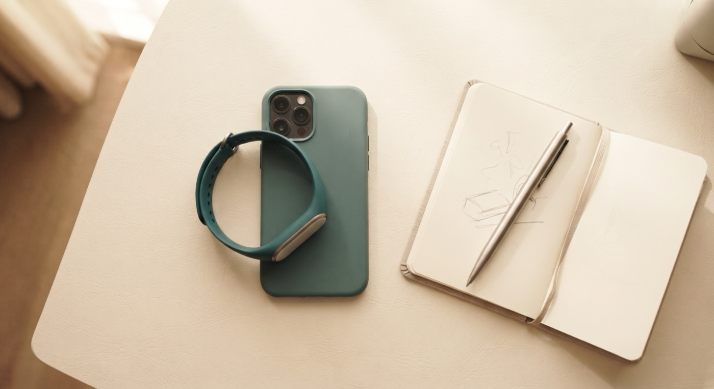
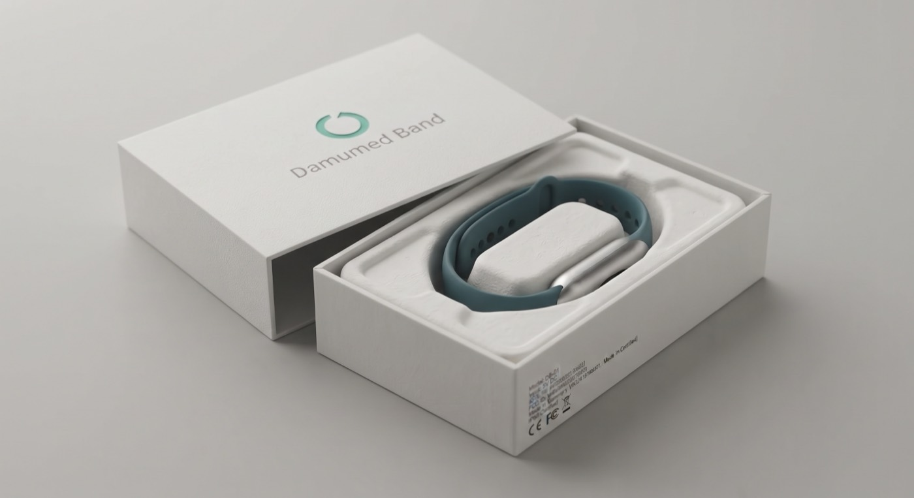

Идея
Врач видит пациента 15 минут в месяц, а болезнь работает круглосуточно. Мы закрываем этот разрыв: датчик на руке → данные в медкарте → врач замечает ухудшение за несколько дней до обострения.
У Damumed уже есть всё, из чего складывается дистанционное наблюдение: приложение в телефоне пациента, медкарта, рабочее место врача. Не хватает одного звена — датчика, который смотрит на человека между приёмами. Это звено мы и добавляем: заказываем в Китае браслет без экрана — глухой корпус, вся ценность в приложении. Он измеряет пульс, вариабельность ритма, кислород в крови, температуру кожи, сон и активность — и отдаёт всё это в приложение Damumed и на панель врача.
Регистрируем как медицинское изделие, держатель удостоверения — Damumed. Это дольше и дороже, чем продавать фитнес-гаджет, но именно статус медизделия превращает браслет в инструмент врача: открывает поликлиники и право говорить о медицине. Носимых устройств с регистрационным удостоверением на рынке Казахстана сегодня нет — мы будем первыми и единственными.
Как выглядит устройство


Ремешки: мужские и женские

С 1 сентября 2026 года новая редакция приказа № ҚР ДСМ-39 обязывает медицинские организации применять носимые устройства и передавать показатели в цифровые системы. Норма вступает в силу — предложения на рынке нет.
Программа управления заболеваниями покрывает ровно наши целевые диагнозы — гипертонию, диабет 2 типа и сердечную недостаточность. В ней более миллиона пациентов, а регистрация участников уже идёт через медицинскую информационную систему.
Цена
Раз ценность — дистанционное наблюдение, а не железо, железо не должно быть барьером. Цену давим вниз, насколько позволяет экономика, и получаем довод, который конкурентам нечем перебить: медицинское изделие дешевле обычного фитнес-браслета.
Где мы встаём на полке
| Кто платит | За что | Цена | Пояснение |
|---|---|---|---|
| Человек покупает для себя |
Браслет — один раз | 14 990 ₸ | в рассрочку на год — 1 250 ₸/мес |
| Подписка в приложении — каждый месяц, по желанию | 690 ₸/мес | расширенные показатели, отчёты и напоминания в своём телефоне; базовые функции бесплатны | |
| Поликлиника за своих пациентов |
Браслет — один раз, за каждое устройство | 6 900 ₸ | оснащение участка без сложных закупочных процедур |
| Наблюдение — каждый месяц, за каждого подключённого пациента | 500 ₸/мес | панель врача, тревоги и отчёты для программы управления заболеваниями | |
| Или всё по подписке — каждый месяц за пациента, браслет включён | 900 ₸/мес | ничего не покупая: устройство остаётся нашим, замена при поломке входит; для бюджета это услуга, а не закуп техники |
Это две независимые линии дохода, которые не пересекаются: розничный покупатель платит сам за себя и не платит за врача; поликлиника платит за своих пациентов, и им подписка не нужна — их данные смотрит врач. У поликлиники два пути на выбор: купить браслеты и платить только за наблюдение — или не покупать ничего и платить 900 ₸ за пациента в месяц, где устройство уже включено. Второй путь снимает капитальные затраты полностью: для бюджета это услуга.
Цена наблюдения для поликлиники подобрана так, чтобы возражение «дорого» снималось арифметикой: комплексный подушевой норматив — около 1 675 ₸ на прикреплённого в месяц, а один аутсорсный вызов скорой обходится поликлинике в 4 800 ₸. Наблюдение пациента за 500 ₸ в месяц дешевле одного такого вызова в девять с половиной раз.
Насколько ещё можно опускать цену
Три ценовых уровня
Проверяем «дешевле — лучше» на прочность. Выясняется: каждый шаг цены вниз оплачивается размером партии. Снижать цену, не увеличивая заказ, — значит менять прибыль на убыток.
| Уровень | Розница | Подписка | Поликлинике | Мониторинг | Как читается на полке |
|---|---|---|---|---|---|
| I. Базовый | 14 990 ₸ | 690 ₸ | 6 900 ₸ | 500 ₸ | на треть дешевле Xiaomi Band 10 |
| II. Массовый | 11 990 ₸ | 490 ₸ | 5 500 ₸ | 400 ₸ | вдвое дешевле Xiaomi, дешевле Huawei Band 10 |
| III. Тендерный | 9 990 ₸ | 390 ₸ | 4 500 ₸ | 300 ₸ | ниже психологического порога 10 тысяч |
Что выходит за два года
Сколько нужно заказать, чтобы цена окупилась
| Уровень | Партия 10 тыс | Партия 20 тыс | Мин. партия | Предел закупочной цены | Сервис в месяц |
|---|---|---|---|---|---|
| I. Базовый | +20,0 млн | +93,9 млн | 7 500 | $11,5 | 4,1 млн ₸ |
| II. Массовый | −3,4 млн | +47,2 млн | 10 750 | $12,4 | 3,2 млн ₸ |
| III. Тендерный | −20,8 млн | +12,5 млн | 16 250 | $8,8 | 2,5 млн ₸ |
Дело не только в прибыли за два года. Тендерный уровень оставляет узкий запас по закупочной цене: если завод даст $8,8 вместо $7,5 — а это внутри обычного переговорного разброса, — проект уходит в ноль. Базовый держит до $11,5 и переживает и подорожание, и провал одного канала продаж.
Второе — выручка от мониторинга: 4,1 млн ₸ в месяц на Базовом против 2,5 млн на Тендерном. За три года после распродажи партии разница составляет 60 млн ₸ — больше, чем вся прибыль от первой партии.
Базовый уровень на партии 10 000 либо Массовый на партии 20 000. Первый вариант — осторожный вход с проверкой спроса. Второй — ставка на охват: цена вдвое ниже Xiaomi даёт прибыль почти вдвое больше (+47 млн против +20 млн), но требует вдвое большего закупа и заранее найденных поликлиник.
Тендерный уровень имеет смысл только как инструмент госзакупа: если появляется централизованный заказ на 20–30 тысяч устройств, цена ниже 10 тысяч тенге снимает вопросы о цене вообще. Как розничная цена первой партии он не оправдан.
Экономика
Почему такая цена вообще возможна: дорогая половина продукта у Damumed уже построена — приложение, серверы, команда разработки. Платим только за то, чего нет: партию устройств, регистрацию и образцы.
Из чего складывается себестоимость
Деньги во времени
Что будет, если завод даст цену выше
Размер партии решает больше, чем цена
Двух вещей: реальной закупочной цены по нашей спецификации — она станет известна после ответов заводов, и готовности поликлиник платить за мониторинг — это проверяется двумя-тремя разговорами с главными врачами до заказа партии.
Целевые группы
Дистанционное наблюдение нужно не всем — оно спасает там, где болезнь меняется незаметно, а каждое упущенное ухудшение заканчивается скорой. Отобрали четыре группы по двум признакам: браслет даёт по ним осмысленный сигнал, и группа достаточно велика.
Кто это носит

Пациенты на диспансерном учёте в Казахстане
| Группа | Что видит браслет | Пилот |
|---|---|---|
| Сердечная недостаточность | ночной пульс, вариабельность ритма, активность, вес — предвестники декомпенсации за несколько дней до симптомов | 2 000 |
| Гипертония 65+ | скрининг мерцательной аритмии по пульсовой волне — самый доказанный сценарий для носимых устройств в мире | 4 500 |
| Лёгочные болезни | насыщение крови кислородом и частота дыхания — единственный сигнал, которого нет ни у одного другого домашнего прибора | 1 500 |
| Диабет 2 типа | сон, активность, дисциплина измерений и лекарств — то, за чем и следит программа управления заболеваниями | 1 500 |
| Резерв на замену и демонстрации | 500 | |
Он не измеряет давление: оптические методы без манжеты не признаются ни одним обществом по гипертонии. Не измеряет глюкозу. Насыщение кислородом на запястье — это тренд, а не клинический пульсоксиметр. Для гипертоника браслет полезен как дисциплина измерений и контроль ритма, а не замена тонометру, и так он и должен продаваться. Обещание, которого прибор не выполняет, стоит дороже любой маржи.
Мобильное приложение
Для пациента дистанционное наблюдение выглядит как несколько экранов в привычном приложении Damumed.
Браслет и приложение — один продукт

| Продукт | Главный экран | Ключевая идея | Подписка |
|---|---|---|---|
| Oura | оценка готовности и её составляющие | разбивка оценки мини-барами: видно, что именно просело; именованные паттерны сна | $5,99/мес |
| Apple Vitals | пять метрик против личного коридора | 7 ночей калибровки, «типично / выброс», тревога только при двух метриках сразу | нет |
| Ultrahuman | лента модулей | модульность: пользователь включает нужные функции сам | маркетплейс модулей |
| Fitbit / Google | оценка готовности и сна | архетипы сна вместо статистики — понятны непрофессионалу | $9,99/мес |
| Клинические платформы | список пациентов у врача | разметка исхода тревоги, отчёт к приёму на один лист, работа с потоком ложных сигналов | контракт с клиникой |
- Личный коридор вместо популяционной нормы. Показываем не «пульс 68», а «выше вашего обычного». Тревога — только когда из коридора выходят две метрики сразу и держатся два-три дня.
- Три уровня раскрытия. Первый экран отвечает на один вопрос: всё ли в порядке. Графики — на втором. Сырые данные — на третьем.
- Разбивка оценки мини-барами — сразу видно, какая составляющая просела: сон, пульс или дыхание.
- Честная калибровка. Пока норма не изучена — прямо пишем, сколько ночей осталось, и не показываем оценку. Недостоверные данные подавляем с объяснением причины, а не рисуем ноль.
- Полоса целевого диапазона и таймлайн лекарств под графиком — приём из клинических исследований: врач видит, как изменение терапии сдвинуло показатель.
- Именованные паттерны вместо статистики — «ровный сон», «рваная ночь». Для пациента 65+ это работает лучше, чем стандартное отклонение.
ИИ занят тем, что не требует медицинской регистрации, но делает наблюдение надёжнее. Он распознаёт артефакты сигнала — браслет съехал, ремешок ослаб — и не пускает мусорные данные к врачу. Подстраивает время напоминаний под привычки человека: одному удобнее утром, другому после ужина. Отвечает на бытовые вопросы — как зарядить, как носить, что означает показатель. Медицинские выводы остаются за прозрачными правилами и врачом — а по мере накопления данных пилота клинический ИИ выйдет второй волной через регуляторную песочницу.
Оценка давления по браслету. Один из мировых производителей браслетов получил за такую функцию предупреждение американского регулятора летом 2025 года. Мы измеряем давление манжетой и вносим в дневник.
Диагнозы и тревоги в реальном времени пациенту. Приложение не говорит «у вас аритмия» — оно говорит «покажите это врачу», а числовой контекст уходит на панель врача. Спортивные метрики, соревнования и рейтинги тоже не берём: аудитория другая.
Экраны пациента
Экраны нарисованы в интерфейсе действующего приложения — те же белые карточки, зелёный акцент и пять вкладок внизу. Раздел не добавляет шестую вкладку: он живёт внутри «Моих данных», где пункт «Показатели здоровья» уже существует.
61 уд/мин
Сон 7 ч 10 мин
Сегодня нужно
Уже собрано
Пока можно
Ночной пульс и ваш коридор
Ровный сон
Верхнее давление и цель врача
134/85
Отчёт за 30 дней
С прошлого приёма
Что изменилось
• Две ночи с низким кислородом — 22 и 23 августа
• Пропущено 4 вечерних измерения
Экран врача в медицинской системе
Для врача дистанционное наблюдение за 143 пациентами должно умещаться в один взгляд — иначе система утонет в собственных тревогах. Зелёные не отвлекают, красные поднимаются наверх с готовым ответом на вопрос «что делать».
| Пациент | Диагноз | Состояние | Что произошло | Действие |
|---|---|---|---|---|
| Абенова Г. К. 1954 · браслет 41 день · носит 92% ночей |
ХСН IIБ ПУЗ, 2-й год |
Красный | Вес +2,3 кг за 3 дня, ночной пульс 74 при коридоре 58–66
два сигнала сразу, держится 3 дня |
ПозвонитьВызов на дом Ложная тревога |
| Кимова А. С. 1958 · браслет 67 дней · носит 88% ночей |
АГ II, 68 лет | Жёлтый | Два эпизода нерегулярного ритма за неделю | Записать на приёмКардиолог |
| Сериков Б. Т. 1961 · браслет 12 дней · носит 41% ночей |
АГ II | Жёлтый | Почти не носит браслет — данных для наблюдения нет | Медсестре: помочь |
| Остальные 140 в личных коридорах |
ХСН · АГ · СД2 · ХОБЛ | Зелёный | Без отклонений | не требуют действий |
- Связка с медицинской картой. Мы единственные можем показать «пульс вырос через четыре дня после смены препарата» — Apple и Oura не знают, что человеку назначили.
- Врач штатно, а не за отдельные деньги. Withings берёт около 100 долларов в год за четыре разбора кардиограммы. У нас участковый врач уже есть и уже финансируется через подушевой норматив.
- Протокол наблюдения включает врач. У Ultrahuman модули выбирает пользователь; у нас приложение перестраивается под диагноз, который поставил врач.
Производство
Железо — самая простая часть проекта, если помнить, что мы покупаем не браслет, а поток данных с руки пациента. Поэтому из двенадцати проверенных заводов решает не цена, а два условия: данные отдаются нам напрямую, и система качества выдержит регистрацию.
| Завод | Мин. партия | Система качества | Доступ к данным | Замечание |
|---|---|---|---|---|
| J-Style Shenzhen Youhong Medical |
2 000 | ISO 13485 ✓ | полный комплект + интерфейс обмена | единственный готовый к медицинской регистрации |
| Eternity Guangdong |
500 | не подтверждена | требует проверки | самая низкая цена, 10+ моделей без экрана |
| Wonlex | 1 000 | нет | комплект проверяем до контракта | лучшая начинка, честно признают отсутствие сертификатов |
Главное условие контракта: устройство отдаёт данные напрямую в приложение Damumed, без облака производителя. Браслеты, работающие только через чужое приложение, дисквалифицируются — с ними невозможна ни интеграция с медкартой, ни хранение данных в Казахстане.
Сроки у всех схожие: образцы через 4–6 недель после запроса, серийная партия — через 8–12 недель после утверждения образца.
Регистрация
Регистрационное удостоверение — граница, отделяющая нас от любого браслета на Kaspi: без него дистанционное наблюдение остаётся обещанием, с ним становится медицинской услугой. Класс риска 2а, национальная процедура, держатель — Damumed. Два решения приняты заранее, чтобы класс не вырос.
Без ЭКГ в первой версии. Функция электрокардиограммы и тревоги в реальном времени поднимают класс риска до 2б, а это обязательная система менеджмента качества и инспекция китайского завода. ЭКГ — кандидат на вторую версию отдельной моделью.
Искусственный интеллект — поэтапно. В первой версии пороги и коридоры считаются прозрачными правилами — так аналитика остаётся в классе 2а и не тормозит регистрацию. ИИ при этом работает там, где не превращает программу в медизделие высшего класса: следит за качеством сигнала, подбирает время напоминаний, готовит врачу черновик заключения. Клинические ИИ-функции — прогноз декомпенсации, умная сортировка тревог — выводим второй волной через регуляторную песочницу ННЦРЗ, когда пилот накопит собственные данные.
Упаковка и маркировка

Официальные платежи при регистрации — экспертиза, испытания, регистрационный сбор — около 1 млн ₸. Реальный бюджет с подготовкой досье и лабораторными работами — 5–20 млн ₸, в расчёт заложено 15 млн. Данные пациентов хранятся только в Казахстане: этого требуют закон о персональных данных и врачебная тайна, и это же закрывает вопрос китайского облака.
Риски
Что может сломать модель — и что мы делаем заранее, чтобы не проверять это на свои деньги. У каждого риска есть ответ до заказа партии, а не после.
| Риск | Чем снимается |
|---|---|
| Завод не даёт доступ к данным или документацию для регистрации | Проверка до предоплаты: комплект разработчика и техническое досье — условие контракта, а не пожелание |
| Регистрация затянется дольше 18 месяцев | Выбор завода с европейским сертификатом открывает ускоренную экспертизу; удостоверение бессрочное, повторять процедуру не придётся |
| Поликлиники не готовы платить за мониторинг | Проверяется двумя-тремя разговорами с главными врачами до заказа партии; если откажут — упор смещается на розницу, где маржа с устройства втрое выше |
| Пациенты не носят браслет | Пилот на 500–1 000 штук в одной-двух поликлиниках; главный показатель — доля ночей с данными, цель не ниже 70% |
| Закупочная цена окажется выше плана | Запас цены держит до $11,5 за устройство; выше — поднимаем розницу до 19 990 ₸, она всё равно ниже Xiaomi |
Что даёт
Идея, с которой начиналась страница, к этому месту стала конструкцией: дистанционное наблюдение врача между приёмами, собранное из датчика за 4 тысячи тенге и инфраструктуры, которая у Damumed уже есть. Эту позицию в Казахстане не занял никто: единственное носимое устройство со статусом медизделия, встроенное в медкарту и рабочее место врача — и при этом дешевле массового фитнес-браслета.
Каждый участник получает своё. Поликлиника — готовый способ исполнить новые требования по дистанционному наблюдению. Пациент — врача, который видит его не 15 минут в месяц, а каждый день, за цену, не требующую раздумий. Компания — выручку, которая не заканчивается с продажей партии: около 4 млн ₸ в месяц от мониторинга и подписок.
Первая партия окупается менее чем за два года. Созданная инфраструктура — регистрационное удостоверение, интеграция с медицинской системой и панель врача — становится барьером для любого следующего игрока: повторить её стоит тех же восемнадцати месяцев.
Файлы отчёта
Все документы проекта в одном месте. Полный отчёт и презентация продублированы кнопками в самом верху страницы.
Инвестиционное резюме для совладельцев — полный текст
Инвестиционное резюме для совладельцев
Дата: 31 августа 2026 г. Основание: комплексное исследование производства, клинической модели, регуляторики, рынка и экономики (материалы приложены).
1. Суть проекта
Выпускаем под брендом Damumed браслет для контроля здоровья: устройство без экрана, производство — контрактный завод в Китае, партия около 10 000 штук. Браслет измеряет пульс, вариабельность ритма, насыщение крови кислородом, температуру кожи, сон и активность. Все данные идут в приложение Damumed, где появляется новый раздел «Здоровье», и на панель врача в медицинской информационной системе.
Регистрируем устройство как медицинское изделие, держатель удостоверения — Damumed. Это дольше, чем продавать «фитнес-гаджет», но открывает поликлиники, госпрограммы и право говорить о медицине в маркетинге. Носимых устройств с регистрационным удостоверением на рынке Казахстана сегодня нет — мы будем первыми.
2. Почему именно сейчас
1. С 1 сентября 2026 года вступает новая редакция приказа № ҚР ДСМ-39: медицинские организации обязаны использовать носимые устройства и передавать их показатели в цифровые системы. Норма есть — предложения на рынке нет. 2. Программа управления заболеваниями покрывает ровно наши целевые диагнозы (гипертония, диабет 2 типа, сердечная недостаточность), в ней более миллиона пациентов, и регистрация в программе уже идёт через медицинскую информационную систему.
3. Ценовая стратегия: минимальная цена
Принципиальное решение — не зарабатывать на железе. Устройство продаётся с минимальной наценкой, деньги приходят от сервиса мониторинга и подписок.
| Что | Цена | Смысл |
|---|---|---|
| Браслет в рознице | 14 990 ₸ | на треть дешевле Xiaomi Smart Band 10 (21 989 ₸) |
| Подписка «медицинский надзор» | 690 ₸/мес | ниже любой психологической планки |
| Браслет поликлинике | 6 900 ₸ | оснащение участка без сложных процедур |
| Мониторинг для поликлиники | 500 ₸/пациент/мес | менее трети подушевого норматива |
Главный рекламный аргумент, который конкурентам нечем перебить: медицинское изделие с регистрационным удостоверением стоит дешевле обычного фитнес-браслета. Это возможно потому, что программную часть делает собственная команда Damumed, и вложения ограничиваются регистрацией.
4. Две модели распространения
Поликлиники. Браслеты для дистанционного наблюдения пациентов с хроническими заболеваниями. Целевые группы: сердечная недостаточность, гипертония у пациентов 65+ со скринингом мерцательной аритмии, хроническая обструктивная болезнь лёгких и астма, диабет 2 типа. На учёте по этим диагнозам — миллионы пациентов: только по гипертонии 1,78 млн человек. Первая партия расписана на 5–8 поликлиник. Поликлиника получает панель наблюдения: список пациентов со светофором, тревоги, отчёты для программы управления заболеваниями.
Розница. Продажа частным покупателям через Kaspi и приложение Damumed. Цена 14 990 тенге, в рассрочку на год — около 1 250 тенге в месяц. Мы продаём не железо, а надзор: данные в медкарте, врач видит отклонения.
5. Производство
Проверено 12 контрактных заводов. Короткий список — три: J-Style (единственный с сертификатом системы менеджмента качества медизделий, готовым комплектом для интеграции и минимальной партией 2 000 штук), Eternity и Wonlex (дешевле и техничнее, но систему качества придётся закрывать самим). Цена устройства на заводе при партии 10 000 — от 7 до 13 долларов; в расчёт заложена нижняя граница как цель переговоров. Ключевое условие контракта: полный доступ к данным устройства без облака производителя — без этого интеграция с Damumed невозможна. Запрос заводам подготовлен.
6. Регистрация
Класс риска 2а, национальная процедура, держатель удостоверения — Damumed. Из принципиального: функцию ЭКГ в первую версию не берём (поднимает класс и требует инспекции завода), аналитика строится на прозрачных правилах без искусственного интеллекта (иначе класс 3), данные храним только в Казахстане. Срок от контракта до удостоверения — 14–18 месяцев. Бюджет регистрации — 5–20 млн тенге, в расчёт заложено 15 млн.
7. Экономика
1. Себестоимость устройства на складе — около 4 000 тенге. 2. Партия 10 000 штук — около 40 млн тенге. Вложения помимо партии: только регистрация и образцы, вместе около 18 млн тенге. 3. Маржа с устройства: в поликлиники — около 2 750 тенге, в рознице (за вычетом комиссии Kaspi) — около 8 900 тенге. 4. Повторная выручка: мониторинг для поликлиник и розничные подписки — вместе около 4 млн тенге в месяц при полностью распроданной партии, и эта сумма не заканчивается вместе с партией. 5. Итог: окупаемость на 21-й месяц от контракта, результат к 24-му месяцу — около +20 млн тенге. При партии 20 000 штук те же цены дают +94 млн тенге. 6. Запас прочности двойной. По закупочной цене — проект остаётся в плюсе, даже если завод даст 11,5 доллара вместо плановых 7,5. По цене продажи — розницу можно опускать до 7 350 тенге, если держать цену для поликлиник; при одновременном снижении обеих цен предел выше — около 11 000 тенге.
8. Главные риски
1. Завод не даст полного доступа к данным или техническую документацию для регистрации — снимается выбором завода и условиями контракта до предоплаты. 2. Затяжка регистрации за 18 месяцев — смягчается выбором завода с европейским сертификатом (открывает ускоренную экспертизу). 3. Готовность поликлиник платить за мониторинг не проверена — проверяется двумя-тремя разговорами с главными врачами до заказа партии. 4. Пациенты не будут носить браслет — снимается дизайном пилота: сначала 500–1000 штук в 1–2 поликлиниках, затем масштаб.
9. Что даёт
Проект ставит Damumed в позицию, которую в Казахстане пока никто не занял: единственное носимое устройство со статусом медицинского изделия, встроенное в медкарту и рабочее место врача, и при этом дешевле массового фитнес-браслета. Поликлиники получают инструмент исполнения новых требований по дистанционному наблюдению, пациенты — прибор с медицинским надзором за цену, которая не требует раздумий, компания — повторную выручку от мониторинга и подписок поверх продаж устройств. Первая партия окупается менее чем за два года, а созданная инфраструктура — регистрационное удостоверение, интеграция и панель врача — становится барьером для любого следующего игрока.
Запрос в ННЦРЗ — готовый текст письма
Тема: Запрос статистических данных по диспансерному наблюдению и программе управления заболеваниями
Уважаемые коллеги!
Прошу предоставить данные, необходимые для проработки проекта дистанционного наблюдения пациентов с хроническими заболеваниями с использованием носимых устройств. Проект прорабатывается в связи с вступлением в силу новой редакции приказа Министра здравоохранения № ҚР ДСМ-39, обязывающей медицинские организации применять носимые устройства и передавать их показатели в цифровые системы.
Интересуют следующие сведения за последний завершённый отчётный период:
1. Численность лиц, состоящих на диспансерном учёте, по классам болезней: – хроническая сердечная недостаточность (I50); – фибрилляция и трепетание предсердий (I48); – артериальная гипертензия (I10–I15); – сахарный диабет 2 типа (E11); – хроническая обструктивная болезнь лёгких (J44) и бронхиальная астма (J45).
2. Возрастной разрез по указанным классам: доля лиц 65 лет и старше.
3. Текущее число участников программы управления заболеваниями и охват в процентах от подлежащих включению, с разбивкой по трём нозологиям программы (артериальная гипертензия, сахарный диабет 2 типа, хроническая сердечная недостаточность).
4. Действующий порядок оплаты дистанционного наблюдения хронических больных: применяется ли отдельный тариф, либо услуга покрывается комплексным подушевым нормативом. Если тариф существует — реквизиты приказа и размер.
5. Средняя стоимость одного случая госпитализации по клинико-затратным группам, связанным с декомпенсацией сердечной недостаточности и обострением хронической обструктивной болезни лёгких.
6. Наличие завершённых или действующих пилотных проектов по применению носимых устройств в первичной медико-санитарной помощи, их результаты.
7. Показатели стимулирующего компонента подушевого норматива, относящиеся к динамическому наблюдению болезней системы кровообращения и сахарного диабета: методика расчёта и фактические значения в среднем по республике.
Прошу указать источник и отчётный период по каждой позиции. При наличии опубликованных сборников достаточно ссылки на соответствующие таблицы.
Что это даёт. Данные позволят рассчитать потребность в оборудовании по регионам, обосновать выбор нозологических групп и определить экономический эффект дистанционного наблюдения для первичного звена.
С уважением,